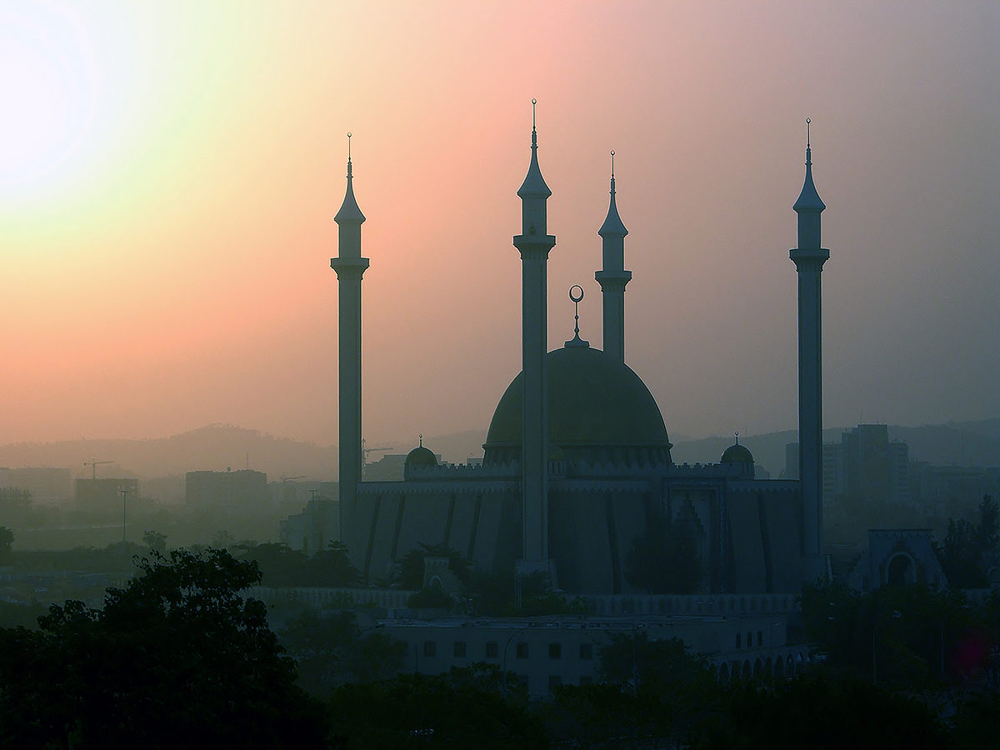
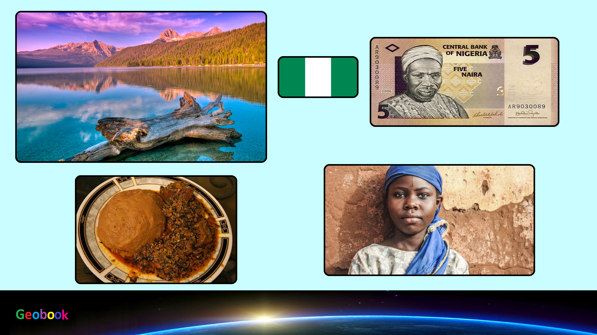

×

Nigeria
Климат
Экваториальный муссонный и субэкваториальный, с высокой влажностью. Среднегодовые температуры везде превышают +25 C. На севере самые жаркие месяцы — март–июнь, на юге — апрель, когда температура достигает +30–32 C. Самый дождливый и "прохладный" месяц — август. Наибольшее количество осадков выпадает в дельте реки Нигер (до 4000 мм. в год), в центральной части страны — 1000–1400 мм., а на крайнем северо-востоке — всего 500 мм. Самый сухой период — зима, когда с северо-востока дует ветер харматтан, приносящий из пустынных районов материка дневной зной и резкие суточные перепады температур (днем воздух прогревается до +40 C и более, а ночью температура падает до +10 C).
____
